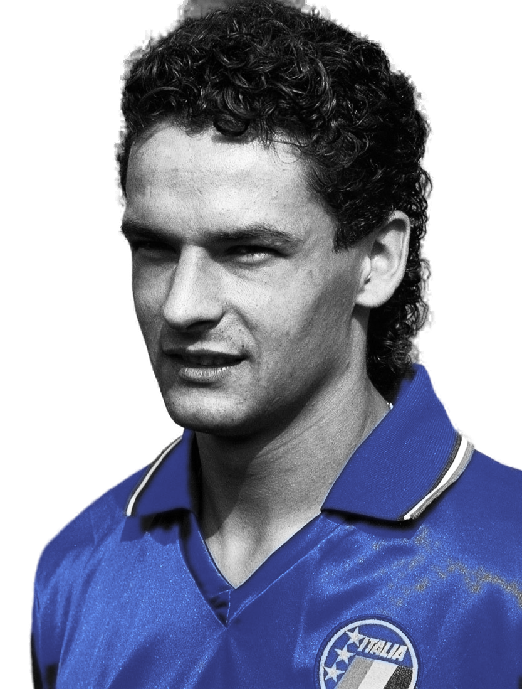
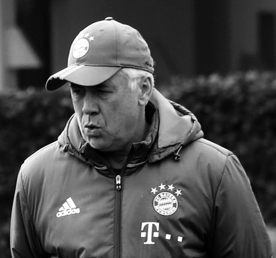
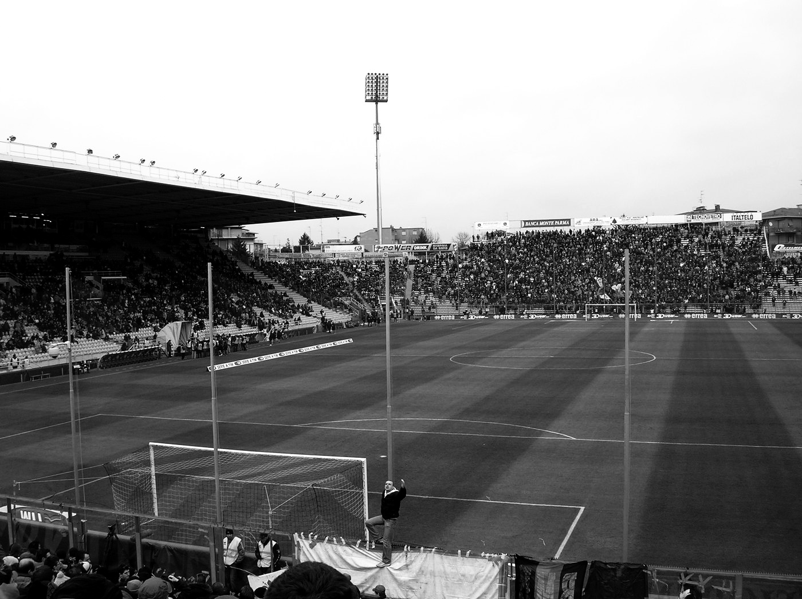
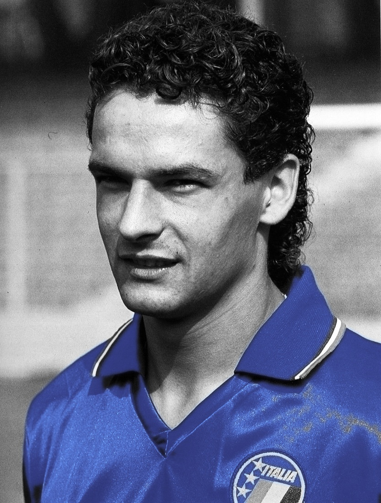

C. ANCELOTTI · ENTRENADOR
FOTO DE 1990R. BAGGIO · Nº 10
NO
Fotos: dominio público (Baggio, 1990) · Rufus46, 2017, CC BY-SA 3.0
PARMA · JULIO 1997

STADIO ENNIO TARDINI · PARMA · FOTO DE 2008
Foto: Wetto, 2008 · CC BY-SA 3.0
BOLONIA · 1997-98 · LIGA

R. BAGGIO · FOTO DE 1990
NO
0
GOLES DE LIGA
«È stato un errore»
CARLO ANCELOTTI · CORRIERE DELLO SPORT, 2024
10
C. ANCELOTTI · FOTO DE 2017
Foto: Rufus46, 2017 · CC BY-SA 3.0
CAMISETA · RECREACIÓNZ. ZIDANE
10
«I have to adapt»
CARLO ANCELOTTI · THE TIMES, 2024
Fotos: dominio público (Baggio, 1990), Rufus46 (CC BY-SA 3.0) y Wetto (CC BY-SA 3.0), modificadas, vía Wikimedia Commons. Pizarra, fichas y camiseta: recreación.